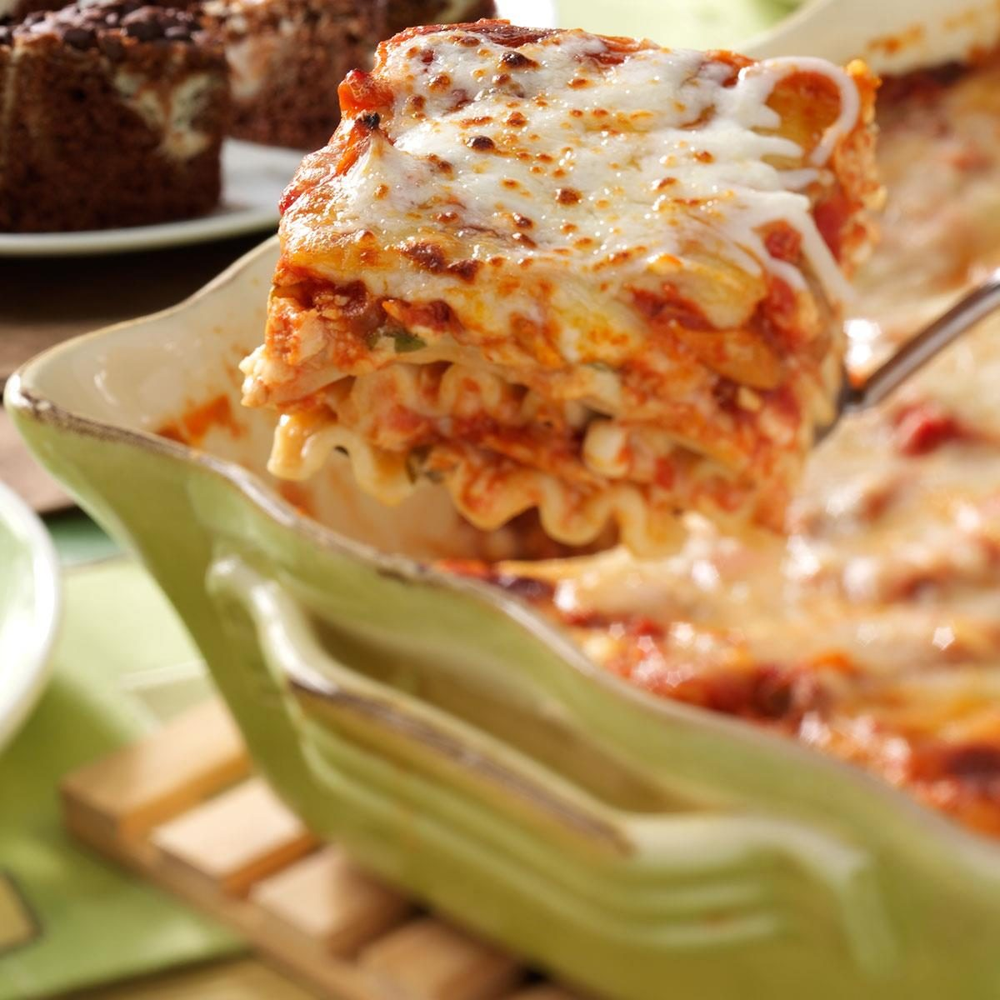

Herbed Chicken Lasagna

Description
For a cooking class several years ago, I lightened up a classic lasagna and created this chicken version. It was preferred over the traditional dish in taste tests in my class and by my family and friends as well. —Dena Stapelman, Laurel, Nebraska
Ingredients
- 10 uncooked lsagna noodles
- 1 pound boneless skilnless chocken breasts
- 1 can (14-1/2 ouncess) diced tomatoes, undrained
- 1 can (12 ounces) tomato paste
Steps
- Cook noodles according to package directions. Meanwhile, broil chicken 6 in. from the heat until juices run clear; let stand for 15 minutes or until cool enough to handle. Shred chicken with two forks. Drain noodles; set aside.
- In a large nonstick skillet, combine the shredded chicken, tomatoes, tomato paste, mushrooms, onion, basil, 3/4 teaspoon salt and garlic powder. Bring to a boil. Reduce heat; cover and simmer for 25-30 minutes. In a bowl, combine the cottage cheese, egg substitute, Parmesan cheese, parsley, pepper and remaining salt.
- In a 13x9-in. baking dish coated with cooking spray, place half of the noodles, overlapping them. Layer with half of the cheese mixture, chicken mixture and mozzarella. Repeat layers. Cover and bake at 375° for 25-30 minutes or until bubbly. Uncover; bake 5 minutes longer. Let stand for 15 minutes before cutting.